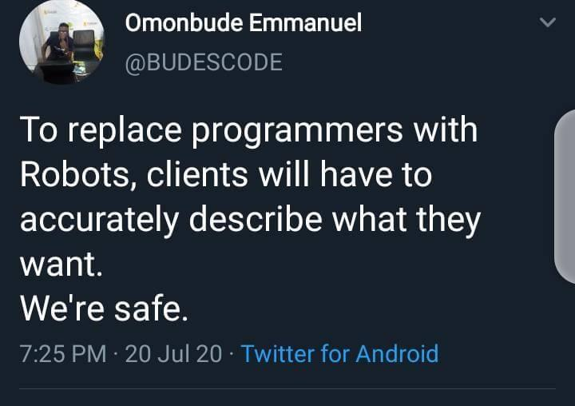
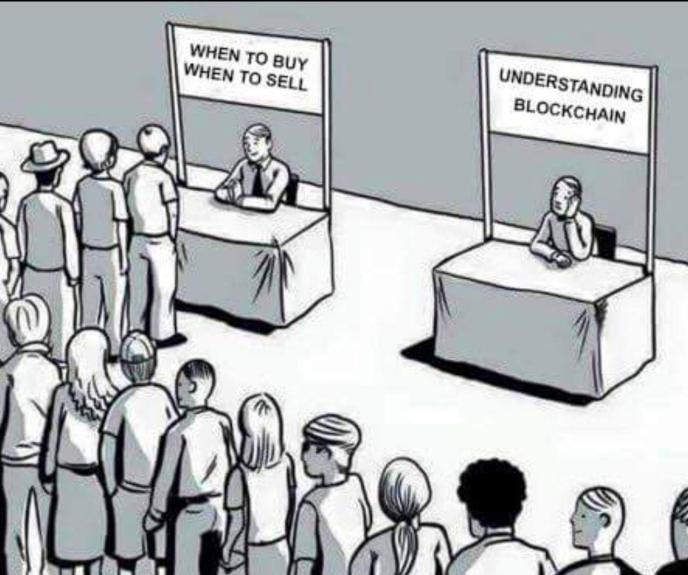

Highlight
- 1999 - Born
- 2003 - My first video game (Worms 3D)
- 2010 - Discovering front-end with HTML/CSS/PHP
- 2019 - Admitted in engineering school in apprenticeship with Safran Electronics and
Defense
Engineering School
- 2017 - Prepared during two years for the national entrance exam in physics, maths, computer
science and engineering.
- 2019 - Success! Went to CentraleSupélec, top tier French school :)
- Master's level program in computer science
- Started focusing on Database and Algorithmic
- Switched to Information Systems Architecture and Front-end for my last year
Working at Safran Electronics and Defense (near Paris) in the
"Periscope" team. We design, test and repair electro-optical sights for submarines! I had two
missions...
Test automation
Designed and implemented an overall testing architecture with TestStand to perform unit tests on our devices.
The most satisfying part was when we started doing endurance tests during the night to save us time...
Updating the database
We store all device parameters (600 params/devices)
But... the web application remained the same since 2007! LAMP (Linux, Apache, MySQL, PHP) environment
Hardest part : history management, deal with the Information Systems department
What I've learned so far...

Blockchain
I discovered blockchains and cryptocurrencies in 2019. I started investing at first but quickly shifted toward
making DApps (Web App for DeFi). It is since then my main hobby :)
Front-end
To build such DApp I deep dived into modern Front-end technologies. Mainly React with TypeScript as well as few common blockchain libraries (Web3.js, ethers.js, etc.)
I also learned Solidity but I am far away from being a blockchain engineer :/
Video Games
Last but not least, I used to play (A LOT) of competitive video games such as Counter Strike or League of Legends
Otherwise I am a Nintendo fan!
I’d love to get coffee and get to know you, so don’t hesitate to get in touch.
